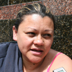

NOTICIAS
Inicio

Dirección: Edificio Fondo de Protección Social de los Depósitos Bancarios, Esquina San Jacinto, Caracas-Venezuela
Teléfono: (0212) 546.00.00
Fax: (0212) 546.00.20
Copyright 2006. R.I.F. G-20003241-3


![GOBIERNO BOLIVARIANO LE RESPONDE A LOS AHORRISTAS DE BANCORO En un acto especial en el salón “Simón Bolívar” de un Centro Comercial conocido en la ciudad de Coro, se realizó este 14 de diciembre de 2011, el pago de saldos mayores a Bs. 30.000 a un nutrido grupo de ahorristas de Bancoro, Banco Comercial, (en Proceso de liquidación). David Alastre, presidente del Fondo de Protección Social de los Depósitos Bancario, y la Gobernadora del estado Falcón, Stella Lugo de Montilla encabezaron el evento e hicieron entrega de los cheques.](images/full/006.jpg)
![FAMILIAS DEL REFUGIO ANDRÉS BELLO: MILITANTES INCORREGIBLES DEL OPTIMISMO Basta un poco de espíritu aventurero para estar satisfechos, pues en esta vida, gracias a Dios, nada sucede como deseábamos, como suponíamos, ni como teníamos previsto. Esto, precisamente, pudo comprobarse el sábado pasado, al cumplirse el décimo día del mes de diciembre del año que está a punto de terminar, cuando 21 familias pertenecientes al Refugio Andrés Bello formaron parte del centenar de sonrisas que iluminaron y refrescaron aquella nublada pero calurosa tarde decembrina en las adyacencias de Charallave, en los Valles del Tuy.](images/full/007.jpg)


![156 DEPOSITANTES DE CASA PROPIA ACUDIERON EL PRIMER DÍA DE PAGO DE ACREENCIAS A partir del 5 de diciembre 4.633 ahorristas de Casa Propia (en proceso de liquidación) le serán honrados sus saldos mayores a Bs. 30.000 que tenían en Casa Propia, Entidad de Ahorro y Préstamo, C.A, para la fecha de su intervención. En vías de efectuar los respectivos pagos, están dispuestas seis agencias a escala nacional y 150 funcionarios para la atención personalizada y entrega de los cheques. El primer día de jornada fueron atendidos 156 depositantes a escala nacional, ellos manifestaron su complacencia por la calidad de atención ofrecida por los funcionarios habilitados para dicho operativo, al tiempo que destacaron que las vías de comunicación dispuestas por El Fondo de Protección Social de los Depósitos Bancarios lograron la interconexión con los funcionarios que les facilitaron información para despejar dudas y conocer el estatus de su solicitud.](images/full/010.jpg)
![1.335 ACREENCIAS SE PAGARON EL PRIMER DÍA DEL OPERATIVO DE PAGO DE A LOS DEPOSITANTES DEL FEDERAL Desde muy tempranas horas de la mañana los depositantes calificados en el tercer orden de prelaciones (mayores de 18 y menores de 55) y personas jurídicas acudieron a las agencias- a escala nacional- habilitadas para el cobro de sus saldos mayores a Bs. 30.000. Llamado que hizo el Fondo de Protección Social de los Depósitos Bancarios, por prensa nacional, en su carácter de ente liquidador de las instituciones bancarias y sus empresas relacionadas.](images/full/011.jpg)


{kind=link}
{kind=link}
{kind=link}